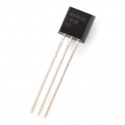
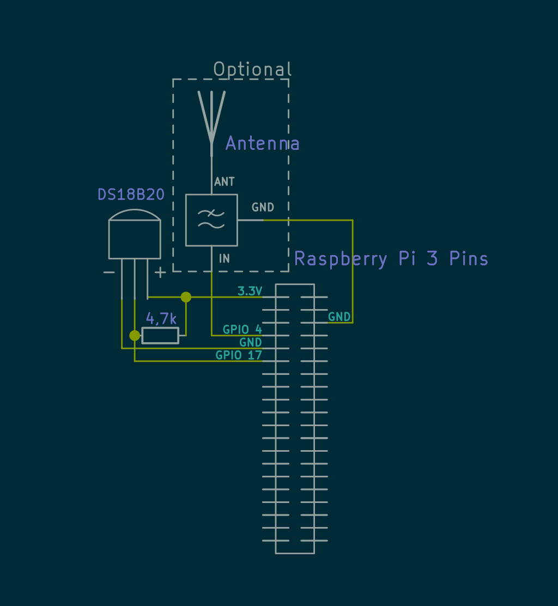
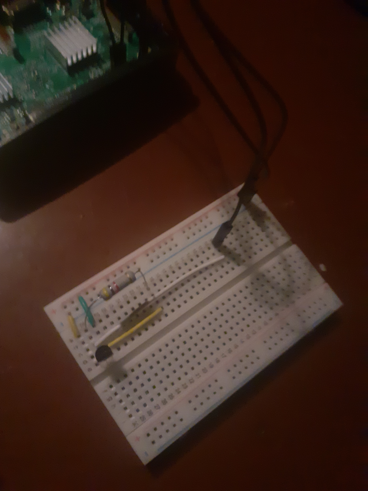
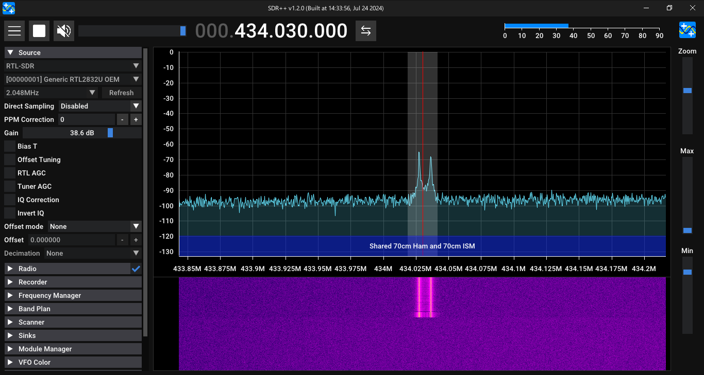
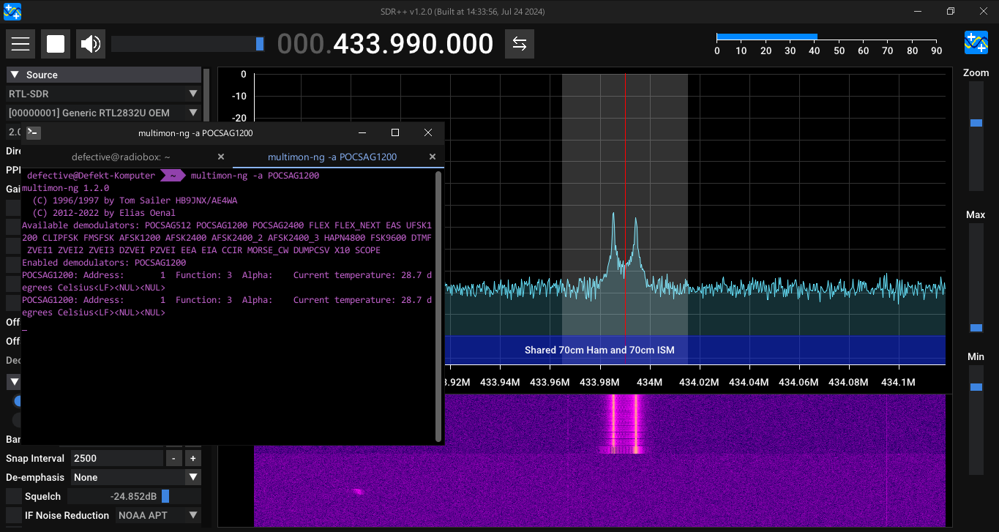

Have you ever wanted to make your own weather station?
One that will work independently, without the need for any other devices?
It turns out you can easily assemble your own weather station, with Raspberry Pi's ability to read various sensors and... to transmit RF signals!
Today we will create our very own (and super simple!) temperature sensor, that will transmit its data straight to your computer. No Wi-Fi or mobile data needed!
DS18B20 is a popular and very easy to use digital temperature sensor.
It operates using 1-Wire interface. It's also very small, can operate in extremely low (-55°C) and high (125°C) temperatures, and is quite accurate.
The sensor deceptively resembles a generic transistor, therefore it can be hard to get a genuine component.
I've had luck buying it from a local reseller, and I would definitely advise against buying from places like Aliexpress or eBay.
As I mentioned before, DS18B20 uses 1-Wire interface, meaning it needs only one wire to transfer data. Neat!
Make sure you have the following:
I won't cover how to install rpitx on your RPi, but it's well explained in its GitHub repository
rpitx is an interesting piece of software, allowing you to transmit RF signals using your Raspberry Pi without any additional hardware!
⚠ Caution ⚠
You can use rpitx without an antenna for short range operation, but if you are going to use one, then do not transmit without at least a low pass filter!
Unfortunately making a filter is outside of this post's coverage, but they are quite easy to make.
Without a filter you are going to transmit a lot of interference on other frequencies, therefore you can get in legal trouble.
Installing rpitx is easy, all you need to do is follow installation instructions in their repo!
Rpitx makes it possible to transmit our data without any external network, straight to our PC!
You will still need a SDR receiver though.
Assembling the sensor circuit is really easy!
All you have to do is connect sensors' pins:
+ to 3.3v power source- to GNDdata pin to a GPIO pin (other than GPIO 4 - that pin is used by rpitx as an antenna!)
As you can see I've also connected an antenna with a low-pass filter circuit.
You can skip connecting the antenna and not connect anything to GPIO 4 at all.
Keep in mind that even if you don't connect an antenna, you still can't use GPIO 4 to connect your sensors. If you do that, the sensor itself will (kinda) act as an antenna! And if you set up GPIO 4 to use the 1-wire interface, rpitx will not work as expected anyway.
Notice the 4.7k resistor between the 3.3v and the data pin? It's the
pull-up resistor. It's required for DS18B20 to work correctly.

A photo of a possible arrangement of components on a breadboard. Antenna not included.
⚠ Caution ⚠
Pay extra attention to connect the sensor with the correct polarity, to avoid permanent damage!
If you connect it with reversed polarity, the sensor will quickly become extremely hot!
Many of you are probably familiar with the 1-Wire interface used by digital temperature sensors.
If so, you have probably already enabled it in your OS's settings.
But here we will also need to
change the pin used by 1-Wire devices!
Why? As mentioned before, GPIO 4 is set up by rpitx to act as an antenna.
GPIO 4 is also the default pin used by 1-Wire communications, so we have to change it to another one. Otherwise our circuit itself will act as a transmitting antenna, and rpitx might not work at all.
Enabling 1-Wire interface in your Raspberry Pi is easy!
Just type the following command:
sudo raspi-configthen navigate to Interface Options > 1-Wire and answer Yes.
Next, select Finish and do not reboot yet.
Now we need to edit /boot/firmware/config.txt (/boot/config.txt on older OS versions) to change the 1-Wire pin.
sudo nano /boot/firmware/config.txtLook for the dtoverlay=w1-gpio option and append ,gpiopin=17 at the end of the line.
It should now look like this:
dtoverlay=w1-gpio,gpiopin=17Now reboot.
Now we need to check if our sensor works.
First, let's check if the sensor is recognized by our device by entering the command below:
lsmod | grep w1The result should be similar to:
$ lsmod | grep w1
w1_therm 24576 0
w1_gpio 12288 0w1_gpio is our 1-wire interface and w1_therm is our sensor.
If you see both, then congratulations, you have wired and configured your sensor correctly!
Your sensor will be accessible through its files located in /sys/bus/w1/devices.
First, use command ls /sys/bus/w1/devices to find 1-Wire devices installed in your system.
The resout should be similar to:
$ ls /sys/bus/w1/devices
28-00000f89b1a7 w1_bus_master1w1_bus_master is our 1-Wire bus, so 28-00000f89b1a7 is our temperature sensor!
Note
Numbers present in device name will vary slightly, because each sensor is assigned an unique id at the time of production!
Finally, read the temperature!
Do cat /sys/bus/w1/devices/28-00000f89b1a7/temperature. The result should be a number.
Divide it by 1000 and voila! You have a temperature in Celsius!
awkInstead of doing the math ourselves, we can make awk do it for us.
Let's expand our previous command:
cat /sys/bus/w1/devices/28-00000f89b1a7/temperature | awk "{print \$1/1000}"And here is an example output:
$ cat /sys/bus/w1/devices/28-00000f89b1a7/temperature | awk "{print \$1/1000}"
24.187so, the temparature is 24.187°C!
Now it's time to transmit our sensor's readings!
First, we need to choose the frequency and transmission mode.
There are multiple modes built into rpitx to choose from, including, but not limited to RTTY, POCSAG and Morse code and even RDS.
Today we will use POCSAG on 434 MHz.
You can transmit using:
echo 1: <line> | sudo pocsag -f <Frequency in Hz>Now let's combine our commands and transmit the actual temperature!
To do so, create the following script:
#!/bin/sh
TEMP=$(cat /sys/bus/w1/devices/28-00000f89b1a7/temperature | awk "{print \$1/1000}")
echo 1: Current temperature: $TEMP degrees Celsius | sudo pocsag -f 434000000Now plug-in your SDR, tune it to 434 MHz and run the script using ./transmist.sh.
You should now see the transmission on your waterfall!

There are quite a few POCSAG decoders out there.
On Windows you can use MultiPSK, on Linux multimon-ng is a great option.
Here we will cover multimon-ng usage on Linux.
Keep your SDR receiver open! We will need it for multimon to function.
Next, let's start the decorder with
multimon-ng -a POCSAG1200then, if you are using pulseaudio or pipewire as your sound system, use pavucontrol to change multimon-ng's input to Monitor of <your current output>.
After that, fire up the transmission again!

Let's modify out script, so the transmission is fully automatic!
Let's add a while loop, and make it transmit the message every 1 hour:
#!/bin/sh
while true
do
TEMP=$(cat /sys/bus/w1/devices/28-00000f89b1a7/temperature | awk "{print \$1/1000}")
echo 1: Current temperature: $TEMP degrees Celsius | sudo pocsag -f 434000000
sleep 3600
donenow to run the script:
chmod +x ./transmit2.sh
screen -S sensor ./transmit2.sh...and done!
Now we can close the terminal. Our Raspberry will now read and transmit current temperature on 434 MHz with POCSAG!